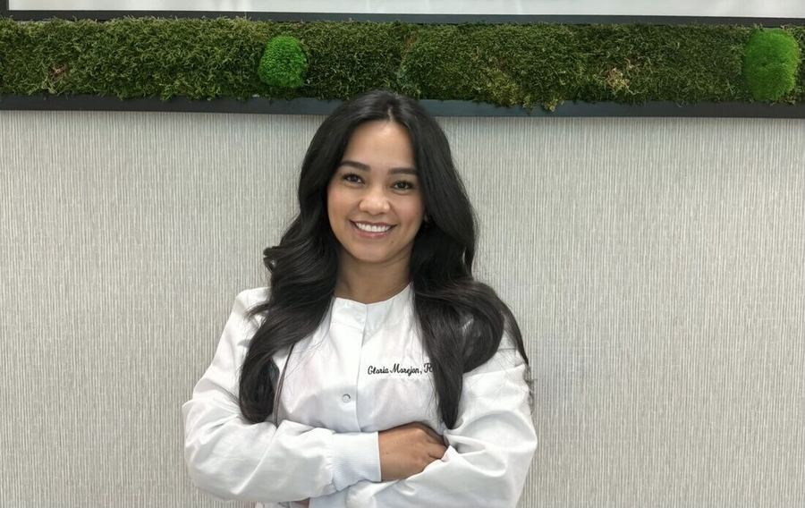

Meet Your Hygienist
Compassionate, patient-centered care from a hygienist who believes everyone deserves access to a healthy smile.

Gloria Morejon
BSDH, RDHAPWhy I Started On Demand Dental
I founded On Demand Dental with a simple belief: quality dental hygiene care should be accessible to everyone, including individuals who face challenges visiting a traditional dental office.
My passion for improving access to preventive oral health care inspired me to create a concierge dental hygiene practice that brings professional, compassionate care directly to patients in the comfort of their homes and other appropriate settings.
Experience
I earned my Bachelor of Science in Dental Hygiene (BSDH) from West Los Angeles College and have six years of experience providing dental hygiene care. As a licensed Registered Dental Hygienist in Alternative Practice (RDHAP), I completed the additional education and licensing requirements that allow me to provide dental hygiene services in alternative settings, including homes, schools, residential facilities, and other community-based locations.
Through On Demand Dental, my goal is to make preventive dental care more convenient, comfortable, and accessible for individuals who may otherwise have difficulty receiving routine oral health services.
"Quality dental hygiene should be within everyone's reach."
— Gloria Morejon, BSDH, RDHAP
Se habla español.
Understanding the Role of an RDHAP
A Registered Dental Hygienist in Alternative Practice (RDHAP) focuses on the preventive side of oral health care. Services may include dental hygiene assessments, professional cleanings, periodontal evaluations, oral hygiene education, and identifying concerns that may require further evaluation.
An RDHAP does not provide restorative treatments such as fillings or crowns, or replace the role of a dentist. The scope of an RDHAP is centered around dental hygiene care, prevention, and helping patients maintain optimal oral health.
If a concierge dental hygiene visit identifies a concern that requires dental treatment beyond the scope of dental hygiene care, the patient will be referred to a trusted dentist for further evaluation and treatment. This collaborative approach helps ensure patients receive the appropriate care they need while maintaining continuity of their oral health journey.
Accessibility and compassion, in every visit
On Demand Dental was built around a simple idea: quality dental hygiene care shouldn't depend on where you live, how you get around, or how comfortable you are in a dental chair. Every patient deserves the same standard of care, delivered in a way that actually works for them.
Every visit, in-office or concierge, is unhurried and judgment-free. We listen first, explain everything in plain language, and build care plans around each patient's real life.
Meeting patients where they are
For homebound seniors, residents of care facilities, and individuals with disabilities, a routine dental visit can be anything but routine. Untreated oral disease affects nutrition, comfort, confidence, and overall health.
Concierge hygiene care changes that. It brings preventive treatment directly to the people who need it most, on their schedule, in the place they feel safest.
Learn About Concierge CareReady to schedule your visit?
Gloria would love to meet you, in the office or wherever you call home.
Book Appointment